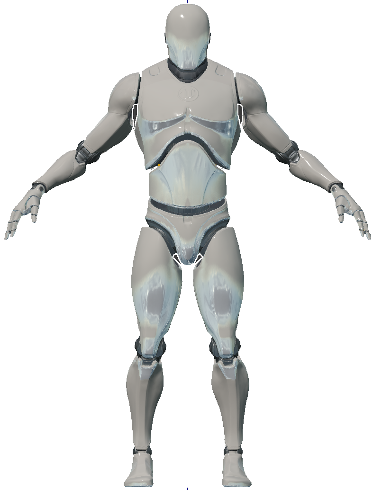
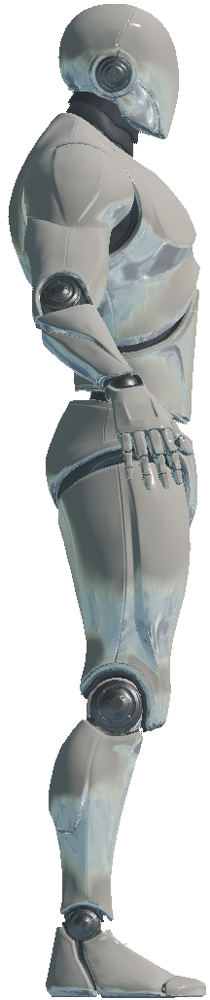

机器人代理 AndroidAgent
外观
| 前视图 | 侧视图 |
|---|---|
 |
 |
描述
一种可通过施加在其关节上的扭矩来控制的机器人代理。更多详情请参阅机器人代理（AndroidAgent）。
控制方案
- 机器人直接扭矩（Android Direct Torques） (
0)
一个 94 维的连续值向量，表示施加在每个关节上的扭矩。有关关节索引的说明，请参阅下文机器人关节部分。
- 机器人最大扭矩（Android Max Scaled Torques） (
1)
一个 94 维向量，包含介于 -1 和 1 之间的连续值，表示施加在每个关节上的缩放扭矩。有关关节索引的说明，请参阅下文机器人关节部分。
1 代表最大正向扭矩，-1 代表最大反向扭矩。
机器人关节
Android 和 JointRotationSensor 的控制方案使用一个长度为 94 的向量来表示 48 个关节。
要了解这些关节，请参考下表，或使用 joint_ind() 辅助方法将名称（例如 spine_02）转换为索引（6）。
注意： 请注意，此处给出的索引是关节的起始索引，有关每个关节在此索引之后有多少个值，请参阅章节标题。例如：neck_01 的起始索引为 3，其值包括 [swing1, swing2, twist]，因此，长度为 94 的向量中的索引 3 对应于 swing1，索引 4 对应于 swing2，索引 5 对应于 neck_01 的 twist。
返回顺序如下：
| 头部、脊柱和手臂关节 | 每个关节都有 [swing1, swing2, twist] |
|---|---|
0 |
头 head |
3 |
脖子 neck_01 |
6 |
脊柱spine_02 |
9 |
脊柱spine_01 |
12 |
左上臂膀upperarm_l |
15 |
左前臂 lowerarm_l |
18 |
左手 hand_l |
21 |
右上臂膀 upperarm_r |
24 |
右前臂lowerarm_r |
27 |
右手hand_r |
| 腿部关节 | 每个关节都有 [swing1, swing2] |
|---|---|
30 |
左大腿 thigh_l |
33 |
左小腿肚（腓肠） calf_l |
36 |
左脚foot_l |
39 |
左脚趾球 ball_l |
42 |
右大腿 thigh_r |
45 |
左小腿肚 calf_r |
48 |
右脚 foot_r |
51 |
右脚趾球ball_r |
右手图：

| 每根手指的第一关节 | 只有 [swing1, swing2] |
|---|---|
54 |
左手拇指 thumb_01_l |
56 |
左手食指 index_01_l |
58 |
左手中指 middle_01_l |
60 |
左手无名指 ring_01_l |
62 |
左手小拇指 pinky_01_l |
64 |
右手拇指 thumb_01_r |
66 |
右手食指 index_01_r |
68 |
右手中指 middle_01_r |
70 |
右手无名指 ring_01_r |
72 |
右手小拇指 pinky_01_r |
| 每根手指的第二关节 | 只有 [swing1] |
|---|---|
74 |
左手拇指 thumb_02_l |
75 |
左手食指 index_02_l |
76 |
左手中指 middle_02_l |
77 |
左手无名指 ring_02_l |
78 |
左手小拇指 pinky_02_l |
79 |
右手拇指 thumb_02_r |
80 |
右手食指 index_02_r |
81 |
右手中指 middle_02_r |
82 |
右手无名指 ring_02_r |
83 |
右手小拇指 pinky_02_r |
| 每根手指的第三关节 | 只有 [swing1] |
|---|---|
84 |
左手拇指 thumb_03_l |
85 |
左手食指 index_03_l |
86 |
左手中指 middle_03_l |
87 |
左手无名指 ring_03_l |
88 |
左手小拇指 pinky_03_l |
89 |
右手拇指 thumb_03_r |
90 |
右手食指 index_03_r |
91 |
右手中指 middle_03_r |
92 |
右手无名指 ring_03_r |
93 |
右手小拇指 pinky_03_r |
AndroidAgent 骨骼
RelativeSkeletalPositionSensor 返回一个数组，其中包含下面列出的每根骨骼的四个条目。
| 索引 | 骨骼名称 |
|---|---|
0 |
骨盆 pelvis |
4 |
脊柱 spine_01 |
8 |
脊柱 spine_02 |
12 |
脊柱 spine_03 |
16 |
左锁骨 clavicle_l |
20 |
左上臂膀 upperarm_l |
24 |
左前臂 lowerarm_l |
28 |
左手 hand_l |
32 |
左手食指 index_01_l |
36 |
左手食指 index_02_l |
40 |
左手食指 index_03_l |
44 |
左手中指 middle_01_l |
48 |
左手中指 middle_02_l |
52 |
左手中指 middle_03_l |
56 |
左手小拇指 pinky_01_l |
60 |
左手小拇指 pinky_02_l |
64 |
左手小拇指 pinky_03_l |
68 |
左手小拇指 ring_01_l |
72 |
左手无名指 ring_02_l |
76 |
左手无名指 ring_03_l |
80 |
左手大拇指 thumb_01_l |
84 |
左手大拇指 thumb_02_l |
88 |
左手大拇指 thumb_03_l |
92 |
左前臂扭转 lowerarm_twist_01_l |
96 |
左上臂扭转 upperarm_twist_01_l |
100 |
右锁骨 clavicle_r |
104 |
右上臂膀 upperarm_l |
108 |
右前臂 lowerarm_l |
112 |
右手 hand_l |
116 |
右手食指 index_01_l |
120 |
右手食指 index_02_l |
124 |
右手食指 index_03_l |
128 |
右手中指 middle_01_l |
132 |
右手中指 middle_02_l |
136 |
右手中指 middle_03_l |
140 |
右手小拇指 pinky_01_l |
144 |
右手小拇指 pinky_02_l |
148 |
右手小拇指 pinky_03_l |
152 |
右手无名指 ring_01_l |
156 |
右手无名指 ring_02_r |
160 |
右手无名指 ring_03_r |
164 |
右手大拇指 thumb_01_r |
168 |
右手大拇指 thumb_02_r |
172 |
右手大拇指 thumb_03_r |
176 |
右前臂扭转 lowerarm_twist_01_r |
184 |
脖子 neck_01 |
188 |
头 head |
192 |
右大腿 thigh_l |
196 |
左小腿肚（腓肠） calf_l |
200 |
左小腿扭转 calf_twist_01_l |
204 |
左足 foot_l |
208 |
左脚趾球 ball_l |
212 |
右大腿扭转 thigh_twist_01_l |
216 |
右大腿 thigh_r |
220 |
左小腿肚 calf_r |
224 |
右小腿扭转 calf_twist_01_r |
228 |
右足 foot_r |
232 |
右脚趾球 ball_r |
236 |
右大腿扭转 thigh_twist_01_r |
插槽
-
摄像头插槽（
CameraSocket）位于机器人设备面部中央 -
视窗（
Viewport）位于设备后方 -
所有关节均可用作插槽。参见机器人关节。